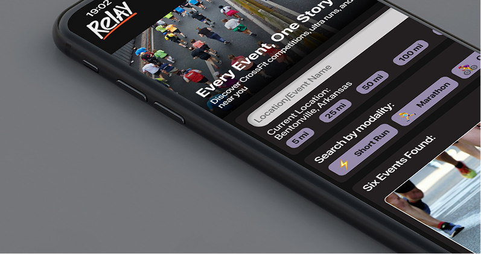

Every Event, One Story — a unified fitness event ecosystem for multi-sport athletes.

Problem — Solution
How we translated fragmented user pain points into a unified, streamlined product experience.
"How might we help athletes track both past and upcoming events across multiple fitness modalities — so they can reflect on their journey while planning future goals — while simplifying event sign-up into a seamless experience?"
Research & Discovery
Simplified into four core areas balancing athletes and organizers while minimizing navigation complexity.
Defined from research, competitive analysis, and user personas.
Design System
A cohesive visual system designed around momentum — helping athletes move from past performance to future goals.
Project Phases